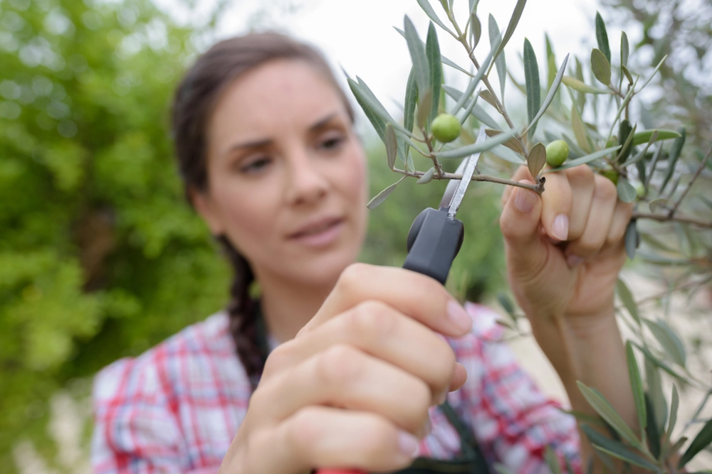
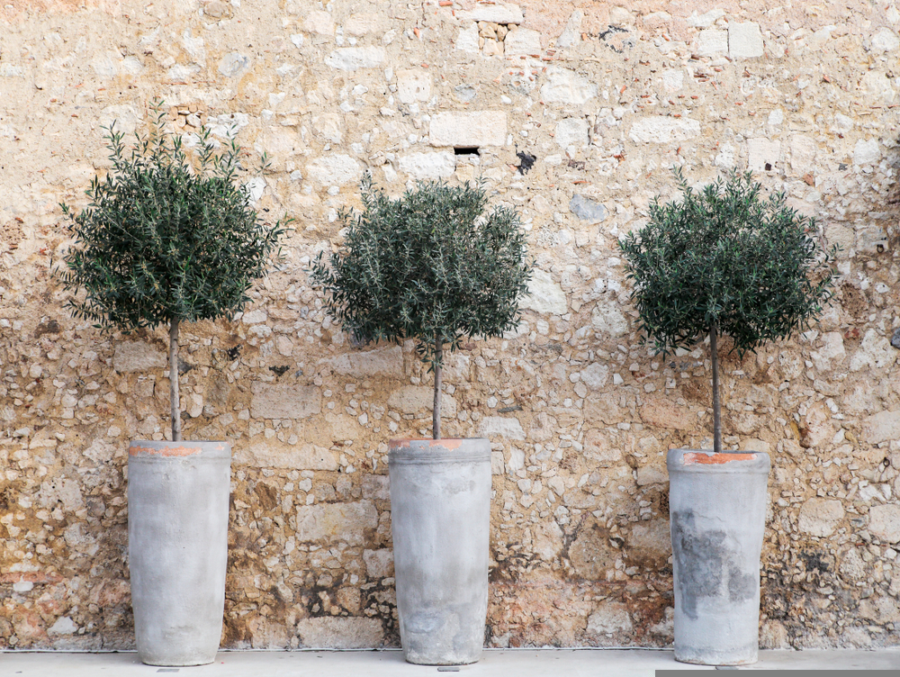
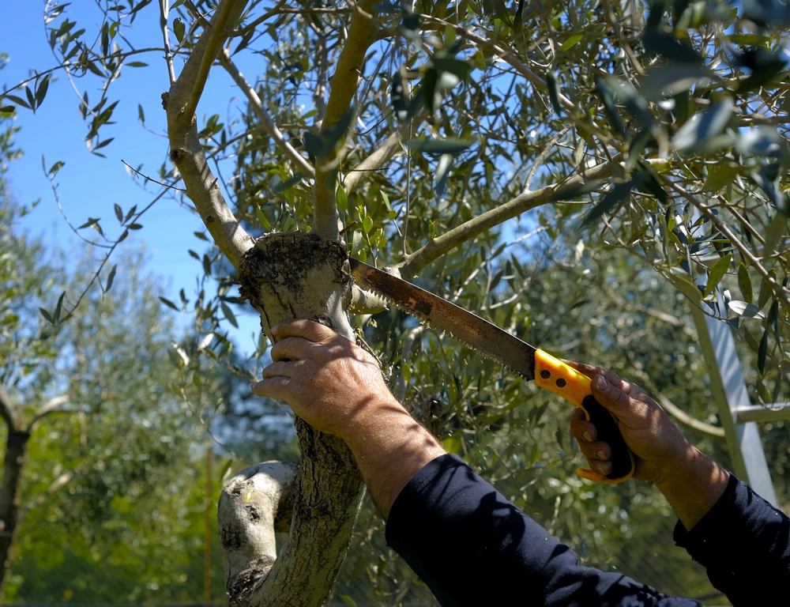

ces arbres majestueux au charme méditerranéen ! Parlons de leur taille, un sujet qui
nécessite un certain doigté, si tu me permets le jeu de mots. Les oliviers sont connus pour leur résilience
et leur longévité, mais il faut savoir les tailler correctement pour qu'ils prospèrent.
La taille des oliviers a plusieurs objectifs. D'abord, il y a la taille de formation, qui intervient lorsque
l'arbre est jeune pour lui donner une structure solide. Ensuite, il y a la taille d'entretien, qui se fait
tout au long de la vie de l'arbre pour éliminer les branches mortes, malades ou enchevêtrées.

La taille des oliviers doit généralement se faire pendant la période de repos végétatif, à la fin de l'hiver
ou au début du printemps. Cela permet à l'arbre de cicatriser plus rapidement. On taille souvent pour ouvrir
le centre de l'arbre à la lumière du soleil, favorisant ainsi une meilleure fructification.
La forme classique de l'olivier est en goblet, avec plusieurs troncs qui partent de la base. Cela offre une
bonne circulation de l'air et facilite la récolte des olives.

Cependant, la taille peut aussi être un art délicat. Trop de coupes peuvent stresser l'arbre, tandis qu'une
taille trop légère peut conduire à une croissance désordonnée.

En fin de compte, la taille d'un olivier dépend de plusieurs facteurs, notamment son âge, son emplacement,
et le résultat souhaité. Comme pour toute forme d'art, il faut du temps, de la patience et un peu
d'expérience pour perfectionner la taille des oliviers.